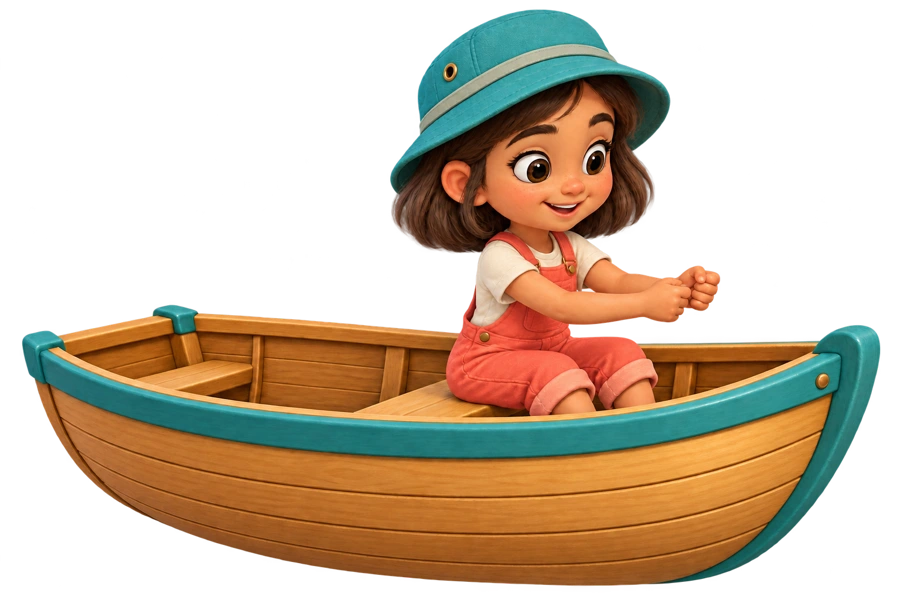
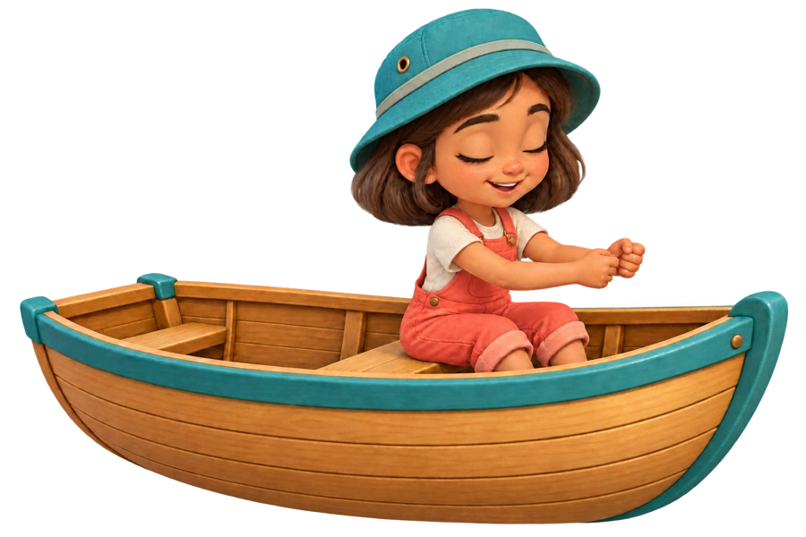
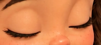
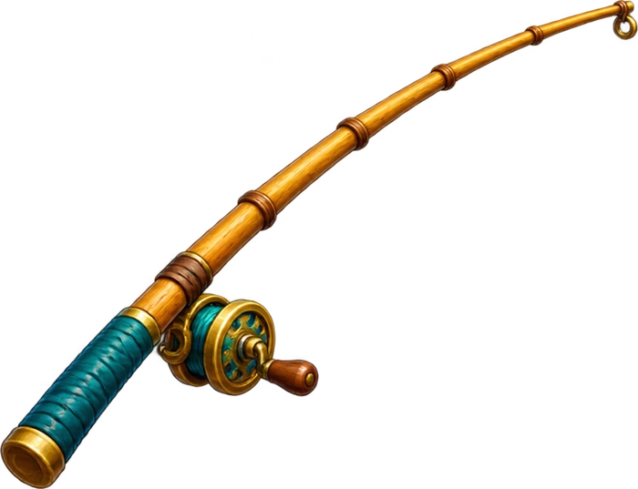
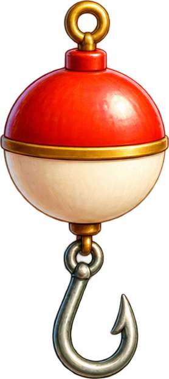

Letter Pond · fishing gear and water

Boat explorer · open eyes
Boat explorer · blink pose
Isolated eyelids · stable blink overlay
Bamboo rod and reel
Bobber and hookWater splashWater entryWater liftSmall plop